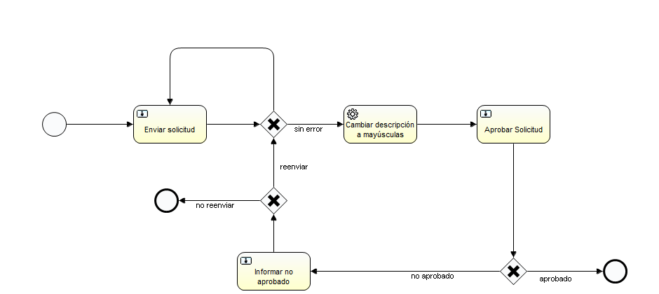

Dra. Edelia García
Dr. Manuel Resinas
Grupo ISA. Diciembre. 2011
1. Introducción
2. Software requerido e instalación
4. Implementación de un proceso
4.1. Análisis del proceso y definición de los dataobjects
4.2. Crear el diagrama del proceso
4.2.1. Definir las propiedades de formularios
4.2.2. Definir las condiciones de los conectores de los gateways
4.2.3. Configurar las actividades del tipo service task
4.3. Crear las clases de los dataobjects
4.3.1. Los métodos get y set
4.3.2. El método init
4.3.3. El método validate
4.3.4. La anotación StateViewPoints y los métodos is
4.3.5. Los métodos updateIn y updateOut
4.4. Crear el espacio de dataobjects del proceso
4.4.1. Anotaciones al inicio
4.4.2. Listeners de las actividades
4.4.3. Métodos de servicio
4.5. Crear el módulo EPL del proceso
5. Integración con otra plataforma BPM
5.1. Implementar la interfaz PlatformControllerInterface
5.2. Enlazar la plataforma BPM con la clase IsabpmCenter
5.3. Crear la clase para la configuración de las service tasks
El paquete isabpm permite estructurar en objetos (dataobjects) la información de los procesos, que habitualmente es tratada en las plataformas BPM como variables atómicas. Además, permite que se obtenga información para calcular indicadores y medidas de la ejecución del proceso utilizando la notación PPINot. Se capturan los eventos de inicio y fin de proceso, inicio y fin de actividades, y modificaciones de propiedades y estados de los dataobjects, que son enviados a Esper (sistema CEP, de procesamiento de eventos complejos) para ser procesados.
Tiene la ventaja de que la misma implementación de clases para un proceso, pueda ser utilizada en diferentes plataformas BPM. El paquete está desarrollado en Java y puede ser integrado con cualquier plataforma BPM desarrollada en este lenguaje. Es capaz de reponerse en el caso de fallos en el servidor.
Conserva en la BD configurada para el paquete, la información de las medidas de las instancias de proceso ejecutadas. Las tablas que se crean al efecto son:
Estas tablas son utilizadas por la applicación web Ppinot Reporter para proporcionar reportes de las medidas y los PPI a partir del XML del proceso o a partir de información introducida mediante formularios.
En este tutorial se explica cómo utilizar el paquete isabpm mediante el desarrollo de un ejemplo con Activiti y cómo integrarlo con otra plataforma BPM. Se supone que el usuario del paquete está familiarizado con Java, Javadocs, Eclipse, BPMN 2.0 y Activiti. Lo más recomendable es utilizar Eclipse Indigo y Maven, con los plugins para desplegar los proyectos local y remotamente; se supone en este caso que el usuario está familiarizado con Maven. Es recomendable apoyarse en el ejemplo durante el estudio.
El paquete IsabpmCenter está implementado en Java versión 5, y también se necesita para la ejecución de Activiti. Java puede descargarse de Oracle Java SE downloads, haciendo click en el botón "Download JDK". Las instrucciones de instalación se encuentran en la página. Para comprobar que la instalación se realizó exitosamente, ejecuta java -version en la línea de comandos. Con esto se muestra la versión instalada de JDK.
Como entorno de desarrollo se pueden utilizar Eclipse Helios o Eclipse Indigo JEE. Lo más recomendable es utilizar Eclipse Indigo, con los plugins de Maven para desplegar los proyectos local y remotamente. Ambos se pueden encontrar en la página de descargas de Eclipse. Descompacta el archivo descargado; entonces ya puedes compenzar a trabajar el archivo eclipse en la carpeta eclipse. Posteriormente instala en Eclipse el plugin Activiti Designer siguiendo las indicaciones en la guía de usuarios de Activiti.
En el caso que se desee ejecutar Activiti en un servidor independiente, es necesario descargar la última versión estable de Ant desde la página de descargas de Ant. Descompacta el fichero y asegúrate de que la carpeta bin esté en el camino de tu sistema operativo. Veríficalo ejecutando ant -version en la línea de comandos. Esto debe mostrar la versión instalada de ant.
En el caso que desees utilizar desde Eclipse Indigo el plugin maven-jetty-plugin como servidor local y el plugin cargo-maven2-plugin para desplegar en un servidor remoto, crea un nuevo proyecto Maven con el arquetipo arch-isabpm-activiti-explorer-archetype, que se puede obtener en el repositorio http://devel.isa.us.es/archiva/repository/internal/. En las variables del arquetipo puedes configurar los datos para la conexión a la base de datos y la forma en que deseas que se ejecute isabpm. Con el objetivo mvn package jetty:run puedes ejecutarlo localmente en el puerto 8080 y puedes desplegarlo a un servidor remoto mediante package cargo:deployer-deploy -Denvironment.type=prod.
Las variables del arquetipo son:
arch-directory-prefix - Prefijo que identifica tu carpeta de backup en el servidor remoto. Debes poner ese mismo prefijo al inicio del id del artefacto cuando crees el proyecto y al nombre de la base de datos.
arch-dev-prod-ppinotactive - Indica si Esper estará activo.
arch-dev-prod-ralactive - Indica si se utilizará RAL para la asignación de usuarios a las tareas.
arch-dev-database-password - Contraseña de la base de datos de Activiti en el servidor local.
arch-prod-backuppath - Camino en el cual se guarda el estado de IsabpmCenter.
arch-prod-database-driverClassName - Clase del driver de la base de datos de Activiti en el servidor remoto.
arch-prod-database-url - Url para la conexión a la base de datos de Activiti en el servidor remoto.
arch-prod-database-user - Usuario de la base de datos de Activiti en el servidor remoto.
arch-prod-database-driverClassName-isabpm - Clase del driver de la base de datos de IsabpmCenter en el servidor remoto.
arch-prod-database-url-isabpm - Url para la conexión a la base de datos de IsabpmCenter en el servidor remoto.
arch-prod-database-user-isabpm - Usuario de la base de datos de IsabpmCenter en el servidor remoto.
En setting.xml de tu repositorio local de Maven debes configurar los datos de acceso al servidor remoto y la contraseña para la base de datos remota, de la forma que se muestra a continuación.
En el caso que se desee ejecutar Activiti en un servidor independiente, hay que descargar la última versión estable de Activiti de la página de descargas de Activiti, y descargar la actualización de Activiti para IsabpmCenter desde aquí. Posteriormente deben realizarse los siguientes pasos:
En el caso que se desee utilizar desde Eclipse Indigo el plugin maven-jetty-plugin como servidor local y el plugin cargo-maven2-plugin para desplegar en un servidor remoto,crea un nuevo proyecto Maven con el arquetipo arch-isabpm-ppinot-reporter-archetype, que se puede obtener en el repositorio http://devel.isa.us.es/archiva/repository/internal/. En las variables del arquetipo puedes configurarlo. Con el objetivo mvn package jetty:run puedes ejecutarlo localmente en el puerto 8080 y puedes desplegarlo a un servidor remoto mediante package cargo:deployer-deploy -Denvironment.type=prod.
Las variables del arquetipo son:
arch-directory-prefix - Prefijo que identifica tus carpetas en el servidor remoto. Debes poner ese mismo prefijo al inicio del id del artefacto cuando crees el proyecto y al nombre de la base de datos.
arch-activiti-explorer-artifactId -Id de artefacto del proyecto que creaste con Activiti Explorer y IsabpmCenter.
arch-dev-database-password-isabpm - Contraseña de la base de datos local.
arch-prod-tmppath - Camino de la carpeta temporal en el servidor remoto.
arch-prod-uploadpath - Camino de la carpeta para subir archivos en el servidor remoto.
arch-prod-database-driverClassName-isabpm - Clase del driver de la base de datos en el servidor remoto, por ejemplo, h2:tcp.
arch-prod-database-url-isabpm - Url para la conexión a la base de datos en el servidor remoto.
arch-prod-database-user-isabpm- Usuario de la base de datos en el servidor remoto.
En el caso que se desee ejecutar Activiti en un servidor independiente, hay que descargar la última versión de Ppinot Reporter desde http://devel.isa.es.us/svn/proyectos/ppinot/, despliégalo en tu servidor local y configúralo adecuadamente en ppinotreporter.cfg.xml.
Se puede descargar un proyecto de ejemplo con IsabpmCenter 1.2 y Activiti 5.8 desde http://devel.isa.es.us/svn/proyectos/ppinot/. Este proyecto está realizado para Eclipse Indigo . En base a este ejemplo se desarrolla el resto del tutorial.
Si utilizas Eclipse Indigo y Maven, importa el proyecto de ejemplo al espacio de trabajo y despliégalo en tu repositorio local. El proyecto arch-isabpm-activiti-explorer está configurado para desplegar el proceso del ejemplo. En la carpeta deployment está isabpm-example-ppinot-1.2.zip con el que puedes desplegar el proceso en Activiti Explorer.
Para modelar un nuevo proceso con Activiti Designer, como el proyecto de ejemplo, hay que:
Para ejecutar un proceso en Activiti Explorer hay que realizar lo siguiente:
Si utilizas Eclipse Helios, puedes crear un nuevo proyecto Activiti en este e importar el código fuente y el diagrama del proyecto de ejemplo descargado. Para modelar un nuevo proceso con Activiti Designer, como el proyecto de ejemplo, hay que:
Si estás utilizando un servidor independiente, para ejecutar un proceso en Activiti Explorer hay que realizar lo siguiente:
Los pasos a seguir para utilizar isabpm al implementar un proceso son los siguientes:
A continuación se detalla cómo realizar cada uno de estos pasos tomando como material de estudio el ejemplo.
En el proceso de ejemplo se realiza lo siguiente:
En este proceso de ejemplo se estructuran los datos en dos dataobjects; uno con la información de la solicitud
que está siendo procesada y otro con el mensaje de error que se puede generar al validar la solicitud. Este último
no es imprescindible pero se incluye para ilustrar.
El dataobject con la solicitud conserva:
El dataobject con el mensaje de error conserva el texto con el mensaje de error; si no hay error, este texto es la cadena vacía.
En el paquete isabpm, cada dataobject tiene un identificador. El databject de la solicitud que está siendo procesada tendra el id solicitud y el dataobject con el mensaje de error tendrá el id mensaje. Estos identificadores son asignados cuando se adicionan los dataobjects al espacio de dataobjects del proceso; pero desde ya se puede asumir que los tendrán y utilizarlos en el diagrama del proceso.
El XML del proceso se encuentra en la carpeta isabpm-example-ppinot/src/main/resources/diagram y el diagrama del proceso es el que se muestra a continuación. En el diagrama se utilizan los dataobjects en los formularios y en las condiciones de los conectores que parten de los gateways, y se configuran las tareas del tipo service task con una clase proporcionada en el paquete isabpm .

En los campos de lectura de los formularios en Activiti hay que utilizar variables atómicas, que en lo adelante serán llamadas variables de la plataforma, por lo tanto para utilizar dataobjects hay que garantizar que:
Con isabpm se realizan estas actualizaciones automáticamente teniendo en cuenta las declaraciones en el paquete del proceso.
En los campos que no son de lectura se puede hacer referencia directamente a las propiedades de los dataobjects. Para esto con el paquete isabpm cada dataobject está asignado a una variable cuyo nombre es el id del dataobject. Entonces, se puede tener acceso a las propiedades de los dataobjects solicitud y mensaje a través de las variables solicitud y mensaje, respectivamente. Mediante estas variables se pueden mostrar en los formularios los valores de las propiedades de los dataobjects, por ejemplo, la propiedad texto del dataobject mensaje se puede mostrar de la siguiente manera #{mensaje.texto}. En lo adelante se hará referencia a estas variables como variables de dataobject.
Las propiedades de los dataobjects, las variables de la plataforma y las variables de dataobjects son actualizadas automáticamente en los eventos de inicio y fin de actividades de acuerdo a lo indicado en el espacio de dataobjects del proceso.
Teniendo en cuenta lo explicado anteriormente, el código XML de una tarea puede quedar de la siguiente manera:
Esta es la tarea "Enviar solicitud" en el proceso del ejemplo. La variable de la plataforma nombre toma valor en el formulario del evento de inicio del proceso y permite asignar la tarea "Enviar solicitud" al usuario indicado por el usuario. En el campo Mensaje se muestra el mensaje de error si es que lo hay. Esto puede ocurrir cuando se retorna a esta tarea desde exclusivegateway1, como puede verse en el próximo epígrafe . En el resto de los campos se leen valores de propiedades del dataobject solicitud mediante las variables de plataforma que tiene asociadas.
Las variables de dataobjects también se pueden utilizar en las condiciones de los conectores. Por ejemplo, para verificar si la solicitud no está aprobada se puede utilizar la condición ${!solicitud.aprobacion}. Esto puede verse en el siguiente ejemplo, donde se muestra el código XML del conector que va desde exclusivegateway1 hasta la tarea "Enviar Solicitud" y que detecta si se produjo error al validar el dataobject solicitud.
La validación del dataobject solicitud se realiza en el evento de fin de la tarea "Enviar Solicitud".
El método Java que se invoca en las actividades de tipo service tasks, puede ser configurado fácilmente. En Activiti este tipo de tareas tienen la propiedad Service Class cuyo valor tiene que ser la referencia a una clase que implemente la interfaz JavaDelegate. Con isabpm en todos los casos a esta propiedad se le da el valor isabpm.platform.activiti.sendevent.ServiceClassCall.
En el ejemplo existe la tarea "Cambiar descripción a mayúsculas" que es una Service Task. En el XML esta actividad aparece de la siguiente manera:
De esta forma se invoca al método asociado a la tarea servicetask1 en el espacio de dataobjects del proceso, como se explica en el epígrafe "Métodos de servicio".
Para utilizar isabpm, cada proceso hay que tener un paquete donde se implementen las clases de los dataobjects y los eventos que se ejecutan en el proceso. Este paquete tiene que tener como nombre el identificador del proceso. Esa es la razón por la cual el paquete del ejemplo es simple; ya que el id del diagrama del proceso es simple también, lo cual puede verse en el XML del proceso.
El .jar de ese paquete tiene que ubicarse en la carpeta web-inf/lib de la aplicación Activiti Modeller, tal como se explicó en el epígrafe "Instalación y uso en Activiti".
Las clases de los dataobjects van en el subpaquete dataobject. En el paquete simple.dataobject del ejemplo se encuentran las clases SolicitudObject y MensajeObject de los dataobjects solicitud y mensaje, respectivamente.
Un dataobject encapsula un conjunto de propiedades que pueden ser tratadas como un todo a través del proceso, lo que
facilita la manipulación de la información, el manteniendo del sistema y su comprensión.
Las clases de los dataobjects extienden a Dataobject, con lo que hereda funcionalidades que permiten dar valor a sus propiedades a partir de variables en la plataforma BPM,
y viceversa, dar valor a variables de la plataforma a partir de las propiedades del dataobject. Esto es útil para incluir formularios en el proceso.
También un dataobject tiene asociado un conjunto de estados que permiten evaluar la situación en que se encuentra; puede ser evaluado desde diferentes puntos de vistas, cuyos estados sean excluyentes.
La clase de un dataobject puede incluir:
A continuación se explican cada uno de estos puntos.
Como para la mayor parte de las clases, en los dataobjects hay que definir los atributos privados que conservan los valores de las propiedades del dataobject, los métodos get para obtenerlos y los métodos set para darles valor. A continuación se muestran estos elementos para la propiedad nombre del dataobject solicitud:
Todos estos elementos se codifican igual que en cualquier clase; tanto los atributos privados, como los métodos get y los set. La única cuestión adicional que hay que tener en cuenta y que es sumamente importante no obviar, es que cada uno de estos métodos hay que registrar el cambio realizado para que se envíen eventos a Esper antes de actualizar el valor de la propiedad, para lo cual se invoca el método recordChange. Esto puede verse en el método setNombre, en el cual antes de actualizar el valor del atributo nombre se registra que el valor de esa propiedad cambió del valor anterior que tenía al actual.
Cada dataobject tiene que implementar el método init, que inicializa las propiedades del dataobject. En el caso de la clase SolicitudObject queda de la siguiente manera:
Cada dataobject tiene que implementar el método validate, que valida el dataobject. En el caso que se detecten errores devuelve el mensaje de error y si no los hay devuelve la cadena vacía. En el caso de la clase SolicitudObject queda de la siguiente manera:
Con la anotación StateViewPoints se declaran los puntos de vistas desde los cuales se evalúan el estado del dataobject. Para cada uno se indica el id, si se evalúan los estados desde el inicio o a partir del estado actual, y la lista de los id de los estados que pertenecen al punto de vista. Para cada estado especificado hay que tener un método is en el dataobject. Al inicio de la clase SolicitudObject, se declara:
@SuppressWarnings("serial")
@StateViewPoints({
@SVPoint(id = "aprobacion", fromBeginning = "true", states = {"aprobado", "noAprobado"})
})
Con lo cual se indica que este dataobject es evaluado desde el punto de vista aprobacion el cual tiene dos estados excluyentes: aprobado y noAprobado, y se evalúa siempre desde el primer estado. En correspondencia con esto, en la clase se definen los métodos isAprobado y isNoAprobado, de la siguiente forma:
Los estados se evalúan cuando se actualizan las propiedades de los dataobjects a partir de las variables del proceso y cuando se actualizan variables de la plataforma a partir de las propiedades de los dataobjects. Estas actualizaciones se ejecutan según lo indicado en el espacio de dataobjects del proceso.
Algunos de métodos updateIn y updateOut definidos en la clase SolicitudObject son:
this.setDescripcion((String) variables.get("descripcion") );
this.setFecha((Date) variables.get("fecha") );
this.setEdad(((Long) variables.get("edad")).byteValue() );
}
/**
* Devuelve el valor de variables de la plataforma BPM a partir de propiedades:
* descripcion, fecha y edad
*
* @return Mapa con el nombres de las variables y su valor
*/
public Map<String, Object> updateOutEnviar() {
Map<String, Object> map = new HashMap<String, Object>();
map.put("descripcion", this.getDescripcion());
map.put("fecha", this.getFecha());
map.put("edad", ((Byte) this.getEdad()).longValue());
return map;
}
Estos métodos son utilizados para actualizar el dataobject solicitud y las variables de la plataforma, respectivamente, cuando se completan las actividades "Enviar Solicitud" e "Informar Aprobado" según lo indicado en el espacio de dataobjects del proceso.
Los métodos updateIn y updateOut permiten tratar con las diferencias que puedan existir entre el tipo de las propiedades del dataobject y el tipo de las variables de la plataforma. También permiten que exista una relación muchos a muchos entre las propiedades y las variables de la plataforma, es decir, a partir de una o más variables de la plataforma se le puede dar valor a una o más propiedades, y viceversa.
Los métodos updateIn son ejecutados cuando se actualizan propiedades del dataobject a partir de variables de la plataforma. En cada uno ingresa un mapa con los valores de las variables indicadas en su anotación BPMVariables, a partir del cual se le puede dar valor a las propiedades que se considere, realizando el procesamiento o conversión de tipos que sea necesario. En el caso del ejemplo mostrado, se le da valor a las propiedades descripcion, fecha y edad, a partir de las variables de la plataforma descripcion, fecha y edad, respectivamente.
Los métodos updateOut son ejecutados cuando se actualizan variables de la plataforma a partir de propiedades del dataobject. En cada uno se devuelve un mapa con los valores de las variables que se desean actualizar. En el caso del ejemplo mostrado, se devuelven los valores que se asignarán a las variables descripcion, fecha y edad, a partir de los valores de las propiedades descripcion, fecha y edad, respectivamente.
Para cada proceso hay que crear el espacio de dataobjects del proceso que es una clase que extiende a DataobjectSpace. Esta clase hay que ubicarla en la raíz del paquete del proceso, tal como ocurre en el paquete simple del ejemplo.
El espacio de dataobjects es utilizado para implementar los listeners de las actividades e indicar en qué forma se ejecutan en el proceso. Esta clase tiene que llamarse ProcessDataobjectSpace y tiene que incluir:
La forma en que se realiza lo anterior se explica en más detalle a continuación.
Como se explicó en el epígrafe "Definir las propiedades de formularios", la plataforma BPM en los formularios utiliza variables atómicas a partir de las cuales se actualizan los dataobjects, y por otra parte, si en el código de los listeners se modifican las propiedades de los dataobjects es necesario posteriormente actualizar las variables de la plataforma. Por lo cual, antes de ejecutar un listener en una actividad hay que actualizar los dataobjects con los valores de variables de la plataforma y después de ejecutar el listener hay que actualizar las variables de la plataforma con los valores de propiedades de los dataobjects. Para lograr esto, con el paquete isabpm las anotaciones al inicio de la clase indican los dataobjects que se utilizan, y la forma en que se actualizan estos y las variables de la plataforma.
En el caso del paquete simple, las anotaciones al inicio de la clase ProcessDataobjectSpace son las siguientes:
Cada anotación DataobjectClass declara un identificador para una clase de dataobejct. Con ese identificador se hace
referencia a esa clase en el resto de las anotaciones. Como puede verse, en el caso de la clase simple.dataobject.SolicitudObject su id es SolicitudObject; que posteriormente se utiliza para declarar que hay que actualizar todos los objetos de esa clase al completarse la actividad usertask2 que es "Enviar Solicitud".
Cada anotación Dataobject indica que se cree un dataobject cuando se inicia el proceso. Se indica la clase del dataobject
y su id. Por tanto, en este ejemplo al iniarse una instancia de proceso se crean los dataobjects solicitud y mensaje, de las clases simple.dataobject.SolicitudObject y simple.dataobject.MensajeObject, respectivamente.
La anotación ObjectUpdates indica cuándo es que se actualizan los dataobjects a partir de las variables
de la plataforma. Cada anotación ObjectUpdate indica la actividad y el evento (create, assignment o complete)
en que se realiza esto; indica si se desea actualizar solo un dataobject, todos los dataobjects de una clase,
o todos los dataobjects de una colección, y cuál es el método updateIn del dataobject se invoca para realizar esto. Es decir, que en el ejemplo, se indica que al completar la actividad startevent1 (el evento de inicio del proceso) se ejecute el método updateInAsignar del dataobject solicitud, que lo que hace es tomar el valor de la variable nombre y asignarlo a la propiedad nombre del dataobject (ver
SolicitudObject).
La anotación VariableUpdates indica cuándo es que se actualizan las variables de la plataforma a partir de las
propiedades de los dataobjects. Cada anotación VariableUpdate indica la actividad y el evento (create, assignment o
complete) en que se realiza esto; indica si se desea actualizar solo un dataobject, todos los dataobjects de una clase,
o todos los dataobjects de una colección, y cuál es el método updateOut del dataobject se invoca para realizar esto. Es decir, que en el ejemplo, se indica que al completar la tarea usertask2, que es "Enviar Solicitud", se actualizan variables de la plataforma a partir de las propiedades del dataobject mensaje, con lo cual se ejecutan todos los métodos updateOut de mensaje (ver MensajeObject). Es necesario hacer esto porque, como se verá a continuación, en el listener que se ejecuta cuando se finaliza esta actividad se valida el dataobject solicitud y el resultado de esa validación se asigna a la propiedad texto del dataobject mensaje.
Al crear las anotaciones ObjectUpdates y VariableUpdates, hay que garantizar que cuando se indique que se actualicen los dataobjects de una colección, previamente ya se hayan adicionado dataobjects a esa colección; la forma en que puede hacerse aparece en el epígrafe "Métodos de servicio".
El espacio de dataobjects del proceso ProcessDataobjectSpace implementa métodos que se invocan en los listeners de las actividades. Estos tienen anotaciones que indican dónde se utilizan, con lo que no es necesario indicarlo en el XML del proceso. De esta manera se logra que la implementación del proceso pueda ser utilizada sin modificaciones en otra plataforma BPM.
En el caso del ejemplo, se incluye el siguiente listener:
La anotación Listener indica la actividad y el evento en que se invoca el método (create, assignment o complete), que es asociado a estas actividades en tiempo de ejecución, durante el parse del proceso. Entonces como puede verse, este es el listener que se invoca cuando se completan las tareas "Enviar Solicitud" e "Informar no aprobado". Se asigna el resultado de validar el dataobject solicitud a la propiedad texto del dataobject mensaje, lo que hace posible que se chequee esta propiedad en la condición del conector que va de exclusivegateway1 a usertask2, como se vió en el epígrafe "Definir las condiciones de los conectores de los gateways".
Se accede a los dataobjects mediante el método getDataobject que se hereda de clase DataobjectSpace, al que se le pasan dos argumentos: uno es el objeto que permite interactuar con la plataforma BPM (que es el único argumento de todos los métodos listeners, en este caso lstValidarSolicitud), y el otro es el id del dataobject. Una vez que se obtiene el dataobject, se puede utilizar de la misma manera que cualquier objeto, invocando sus métodos, como se puede ver en el recuadro superior.
Como puede verse en la última instrucción, si es necesario asignar valor a alguna variable de la plataforma BPM directamente desde el listener se puede utilizar el método setVariable heredado, al cual se le pasan como argumentos: el objeto que permite interactuar con la plataforma BPM, el nombre de la variable y el valor que se le desea asignar.
Existen clases que se referencian directamente desde el XML del proceso, por ejemplo, las Service Classes utilizadas en las Service Tasks en Activiti. Desde estas clases se pueden invocar métodos del espacio de dataobjects del proceso, llamados métodos de servicio; lográndose de esta manera que la implementación del proceso pueda ser utilizada sin modificaciones en otra plataforma BPM.
Como se explicó en el epígrafe "Configurar las actividades del tipo service task", con isabpm en todos los casos a esta propiedad se le da el valor isabpm.platform.activiti.sendevent.ServiceClassCall. De esta forma se invoca al método asociado a la tarea servicetask1 en el espacio de dataobjects del proceso. Mediante la anotación Executors es que se asocian las service tasks a métodos en el espacio de dataobjects, como puede verse en el recuadro a continuación.
Al igual que los listeners estos los métodos de servicio tienen como único argumento el objeto que permite interactuar con la plataforma BPM.
En el método accChangeToUppercase se cambia a mayúsculas la descripción del dataobject solicitud, y se adiciona este dataobject a la colección solicitudCollection, es por esto que se puede indicar en las anotaciones al inicio de ProcessDataobjectSpace que se actualicen las variables de la plataforma a partir de los dataobjects de esa colección cuando se finaliza la ejecución de la actividad servicetask1, como pudo verse en el epígrafe "Anotaciones al inicio".
Con lo explicado hasta el momento ya se tienen creados el XML y el paquete del proceso. Solo resta crear el módulo con las declaraciones EPL que permiten que Esper capture las medidas deseadas.
Para cada proceso implementado hay que crear su módulo EPL con las declaraciones que indican a Esper qué eventos tiene que capturar y a qué listeners enviarlos. El nombre del archivo tiene que ser:
"module-" + id-del-proceso + ".epl"
Este archivo tiene que estar en la carpeta
de las clases, en la subcarpeta isabpm-modules.
En los módulos EPL, las declaraciones siguen patrones, uno para cada medida de proceso. Así mismo cada medida tiene un listener y cada uno conserva en la BD configurada para el paquete, la información de las medidas.
Los listeners están en el paquete isabpm.esper.listener.
Si no se desea que se envíen eventos a Esper se puede desactivar en isabpm.cfg.properties, que se encuentra en la carpeta
de las clases. La propiedad a modificar es PPINOTACTIVE.
A continuación se muestra el módulo EPL del proceso simple. El archivo correspondiente se puede crear en la aplicación Ppinot Reporter en la opción "Administrar XML".
module esper.ejemplo1;
@Name('ProcessStart1')
@Tag(name='listeners', value='isabpm.esper.listener.ProcessStartListener')
select * from ProcessStartEvent;
@Name('ProcessEnd1')
@Tag(name='listeners', value='isabpm.esper.listener.ProcessEndListener')
select * from ProcessEndEvent;
@Name(áctivityStart1')
@Tag(name='listeners', value='isabpm.esper.listener.ActivityStartListener')
select * from ActivityStartEvent;
@Name(áctivityEnd1')
@Tag(name='listeners', value='isabpm.esper.listener.ActivityEndListener')
select * from ActivityEndEvent;
@Name('DataMeasure1')
@Tag(name='listeners', value='isabpm.esper.listener.DataMeasureListener')
select processId, instanceId, executionId, time, dataobjectId, 'edad' as property, propertyMap('edad').value as value, propertyMap('edad').type as type from DataobjectEvent(propertyMap('edad').propertyId='edad') where dataobjectId='solicitud';
@Name('DataMeasure2')
@Tag(name='listeners', value='isabpm.esper.listener.DataMeasureListener')
select processId, instanceId, executionId, time, dataobjectId, 'descripcion' as property, propertyMap('descripcion').value as value, propertyMap('descripcion').type as type from DataobjectEvent(propertyMap('descripcion').propertyId='descripcion') where dataobjectId='solicitud';
@Name('DataConditionMeasure1_true')
@Tag(name='listeners', value='isabpm.esper.listener.DataConditionMeasureListener')
select processId, instanceId, executionId, time, dataobjectId, áprobado' as state, true as truth from DataobjectEvent(stateMap(áprobacion').stateId=áprobado') where dataobjectId='solicitud';
@Name('DataConditionMeasure1_false')
@Tag(name='listeners', value='isabpm.esper.listener.DataConditionMeasureListener')
select processId, instanceId, executionId, time, dataobjectId, áprobado' as state, false as truth from DataobjectEvent(stateMap(áprobacion').stateId!=áprobado') where dataobjectId='solicitud';
La declaración ProcessStart1 captura el evento de inicio de instancia de proceso ProcessStartEvent, y los dirige al listener isabpm.esper.listener.ProcessStartListener.
La declaración ProcessEnd1 captura el evento de fin de instancia de proceso ProcessEndEvent, y los dirige al listener isabpm.esper.listener.ProcessEndListener.
La declaración ActivityStart1 captura todos los eventos de inicio de actividad ActivityStartEvent, y los dirige al listener isabpm.esper.listener.ActivitiyStartListener.
La declaración ActivityEnd1 captura todos los eventos de fin de actividad ActivityEndEvent, y los dirige al listener isabpm.esper.listener.ActivitiyEndListener.
La declaraciones DataMeasure1 y DataMeasure2 capturan los eventos de modificación de dataobjects DataobjectEvent en los cuales se haya modificado las propiedades edad y descripcion, respectivamente, y los dirige al listener isabpm.esper.listener.DataMeasureListener. La diferencia entre ambas es solamente la propiedad detectada. Con lo cual se puede ver que ese es el patrón de las DataMeasure, modificando solamente el id de la propiedad.
Las declaraciones DataConditionMeasure1_true y DataConditionMeasure1_false capturan los eventos de la clase DataobjectEvent en los cuales se haya modificado el estado aprobado, y los dirige al listener isabpm.esper.listener.DataConditionMeasureListener. En la primera se detecta si el dataobject está en el estado aprobado, y en la segunda si dejó de estarlo; por lo cual ambas declaraciones son complementarias y conforman el patrón de las DataConditionMeasure, modificando solamente el id del estado.
El paquete isabpm puede ser integrado fácilmente con cualquier plataforma BPM desarrollada en Java. Para integrar el paquete con una plataforma BPM hay que realizar lo siguiente:
A continuación se explican cada uno de estos puntos.
La interfaz PlatformControllerInterface declara los métodos que permiten realizar operaciones en una plataforma BPM. Estos métodos deben ser implementados en una clase que herede de esta interfaz. Esta clase tiene que llamarse PlatformController y estar en un paquete cuyo nombre siga el siguiente convenio:
"isabpm.platform." + BPMPLATFORM
Donde BPMPLATFORM es una constante en el archivo de configuración isabpm.cfg.properties. Un ejemplo de un paquete como este es isabpm.platform.activiti.
A continuación puede verse la implementación de uno de estos métodos para Activiti.
Activiti en los métodos de sus listener y service classes pasa como argumentos objetos de la clase DelegateTask, DelegateExecution o ExecutionEntity. A su vez el paquete isabpm pasa estos objetos como argumento a los métodos de las clase PlatformControllerInterface. Estos objetos son los que permiten interactuar con Activiti en tiempo de ejecución, y son utilizados, en los métodos implementados en la clase PlatformController para devolver los valores requeridos en cada uno de los métodos, como puede verse en el ejemplo.
Estos objetos también son pasados a los listeners y métodos de servicio del espacio de dataobjects del proceso, como pudo apreciarse en el epígrafe "Crear el espacio de dataobjects del proceso", donde son utilizados para obtener dataobjects, adicionarlos a colecciones, etc.
Hay que enlazar la plataforma BPM con la clase IsabpmCenter, de manera que la plataforma comunique a esta clase cada vez que se producen eventos de inicio y fin de proceso, y de inicio y fin de actividad. Para esto IsabpmCenter proporciona los métodos executeProcessStartEvent, executeProcessEndSendEvent, executeActivityStartEvent y executeActivityEndSendEvent, respectivamente.
En el caso de Activiti, se creó el paquete isabpm.platform.activiti.sendevent con cuatro clases que implementan la interfaz ExecutionListener de Activiti, invocando cada una a uno de los métodos de IsabpmCenter mencionados anteriormente. A continuación se muestra el código de una de ellas, donde se puede apreciar la forma en que se comunica a IsabpmCenter que se produjo un evento.
Este es un listener que la clase PpinotParseListener que hereda de BpmnParseListener de Activiti, adiciona como evento de fin a todas las actividades durante el parse del proceso. Con el resto de las clases en el paquete isabpm.platform.activiti.sendevent realiza lo mismo, de acuerdo al evento al que atiendan.
Para adicionar PpinotParseListener a los preparsers de Activiti se modificó en Activiti Explorer el archivo applicationContext.xml, adicionándole el código que se muestra destacado en rojo a continuación.
En el caso de Activiti se creó la clase isabpm.platform.activiti.sendevent.ServiceClassCall con la que se configura todas las service tasks, como se explicó en el epígrafe "Métodos de servicio". A continuación se muestra el código de esta clase; en otras plataformas BPM habría que realizar algo semejante.